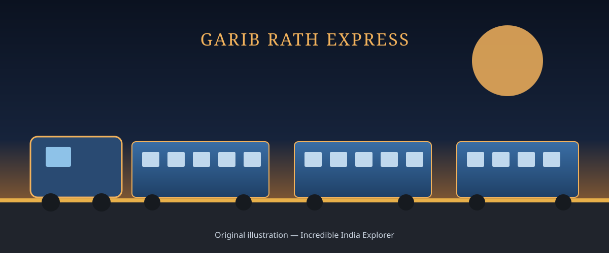

TRAINS OF INDIA
Garib Rath Express
Affordable, all-AC 3-tier long-distance travel — India's answer to bringing air-conditioned comfort within reach of the common passenger.
Explore Routes
About Garib Rath Express
Garib Rath — literally "chariot of the poor" — is a class of long-distance train introduced by Indian Railways to make air-conditioned travel affordable for passengers who would otherwise have travelled in non-AC sleeper class. Every coach on a Garib Rath rake is AC 3-tier, with no separate first-class or AC 2-tier accommodation.
To keep fares low, Garib Rath coaches use a higher-density berth layout than standard AC 3-tier coaches, and many on-board services that are complimentary on premium trains — such as bedrolls and full meals — are offered on a pay-as-you-use basis instead. The result is AC comfort priced close to ordinary sleeper class fares.
History & Development
From a budget announcement to a nationwide network of affordable AC trains.
Concept & Design
How Garib Rath keeps AC travel affordable without cutting corners on safety.
Routes & Destinations
Notable Garib Rath services connecting major regions of India.
Passenger Facilities
What to expect on board an AC 3-tier Garib Rath coach.
Railway Significance
Garib Rath's central contribution to Indian Railways was proving that air-conditioned travel did not have to be a premium product reserved for wealthier passengers. By pricing AC 3-tier fares close to sleeper class, it opened up faster, more comfortable long-distance travel to migrant workers, students, and families who had previously travelled only in non-AC coaches.
The service also helped ease overcrowding in sleeper class on several busy corridors by giving budget-conscious travellers a genuine AC alternative, and it demonstrated that cost-effective design — rather than removing amenities altogether — could make premium comfort broadly accessible across the network.